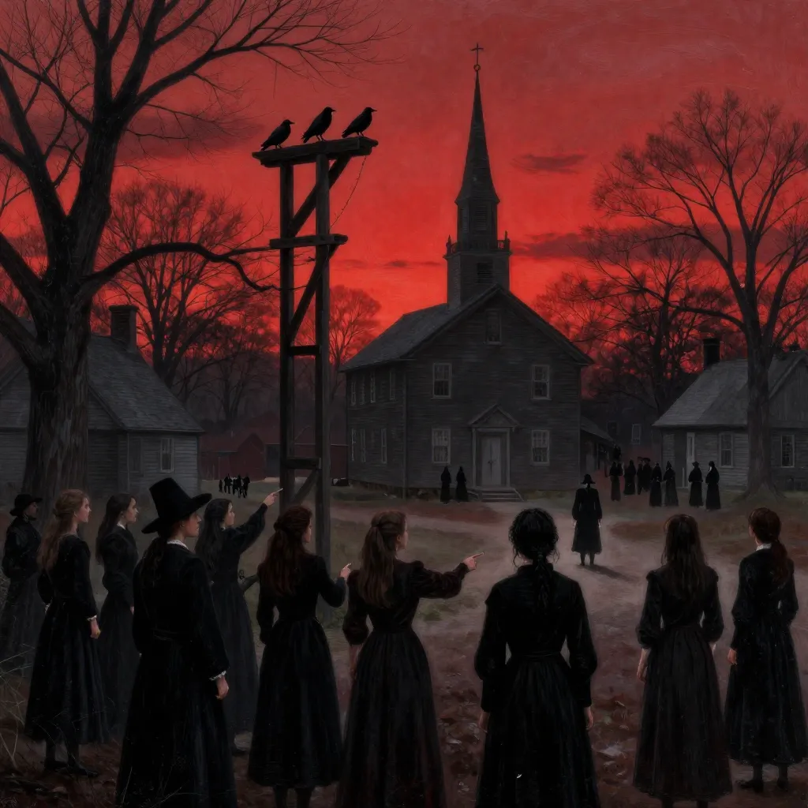
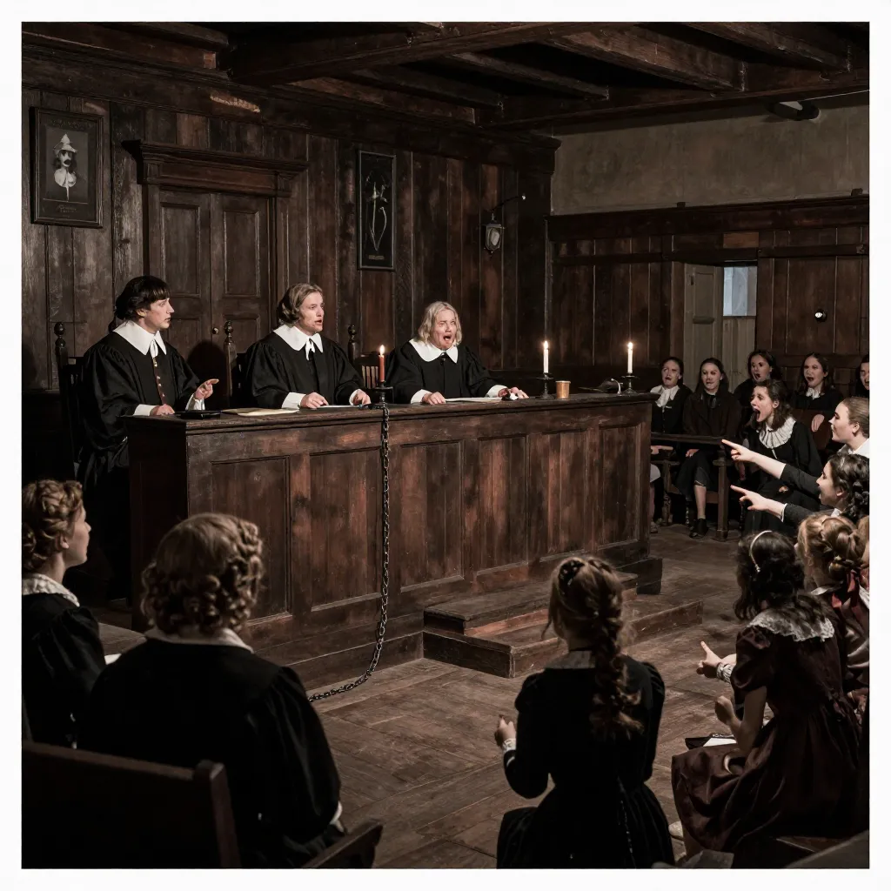
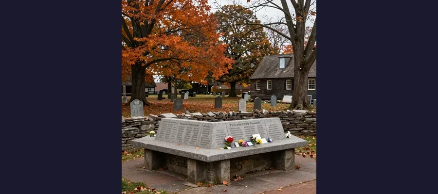

Salem Witch Trials: How Mass Hysteria and Fear Executed 20 People in Colonial America

Salem Village, 1692 — where fear of the Devil and mass hysteria led to the execution of 20 people. Young girls’ accusations of witchcraft, accepted as spectral evidence in court, tore a community apart in one of colonial America’s darkest chapters.
In the winter of 1692, in the rigid, God-fearing Puritan settlement of Salem Village (now Danvers, Massachusetts), two young girls began to scream. Betty Parris, age nine, and her cousin Abigail Williams, age eleven, the daughter and niece of the local minister Reverend Samuel Parris, convulsed, contorted their bodies into impossible positions, and claimed to feel invisible hands pinching and biting them. They babbled incoherently, dashed furniture about, and crawled under tables making sounds that terrified the adults who witnessed it. The village doctor, William Griggs, could find no physical cause. His diagnosis was as simple as it was catastrophic: the girls were bewitched. Within weeks, the nightmare that would become known as the Salem Witch Trials had consumed an entire community, leading to the arrest of over two hundred people, the conviction of thirty, and the execution of twenty — nineteen by hanging, and one by being crushed to death under stones. It remains the deadliest witch hunt in American history and one of the most terrifying examples of what happens when fear, religion, and the machinery of justice combine into a weapon of mass destruction.
The Salem Witch Trials were not a single event but a cascading catastrophe — a chain reaction of accusation, confession, and condemnation that fed on itself with increasing ferocity over the course of nine months. The Puritans of Salem Village lived in a world where the Devil was as real as the soil beneath their feet, where every misfortune — a failed crop, a sick child, a dead cow — could be interpreted as evidence of supernatural malevolence. The village was riven by internal divisions: land disputes between wealthy merchants and struggling farmers, power struggles between rival congregations, and the ever-present anxiety of life on the edge of a wilderness that the Puritans believed was literally inhabited by demonic forces. When the girls began to exhibit their terrifying symptoms, the community did not ask why. They asked who. And once they started asking, they could not stop.
The Accusers and the Accused: How Fear Became a Weapon
The initial accusations came from a small group of young women, most of them between the ages of eleven and twenty. After Betty Parris and Abigail Williams, the most prominent accuser was Ann Putnam Jr., a twelve-year-old girl from one of the village's most powerful families. She was joined by Mercy Lewis, Mary Walcott, and Elizabeth Hubbard. The girls' symptoms — convulsions, visions, claims of being bitten and pinched by invisible specters — were treated not as illness but as evidence. Under pressure from the magistrates, the girls named names. And the names they named told a story about Salem that the community did not want to hear about itself.
The first three people accused of witchcraft in Salem were Tituba, Sarah Good, and Sarah Osborne — the most marginalized, vulnerable members of the community. Tituba was an enslaved woman of Caribbean or African origin in Reverend Parris's household. Sarah Good was a poor beggar who wandered the village asking for shelter and food. Sarah Osborne was an elderly woman who had scandalized the community by marrying her servant and attempting to seize her sons' inheritance. These were not random targets. They were the people that Puritan society had already decided were suspect — the poor, the outsider, the nonconformist. Tituba, under intense interrogation and almost certainly the threat of physical violence, confessed to witchcraft and named other women in the village as her co-conspirators. Her confession — vivid, detailed, and almost certainly coerced — provided the template for every accusation that followed and transformed a local panic into a full-blown crisis.
📜 Spectral Evidence: When Dreams Became Proof of Murder
The most controversial legal doctrine of the Salem Witch Trials was spectral evidence — the practice of allowing witnesses to testify that the specter or spirit of an accused person had appeared to them in dreams, visions, or waking hallucinations to torment, pinch, bite, or choke them. Under this doctrine, a girl who dreamed that Rebecca Nurse's ghost was strangling her could testify to that dream in open court, and the dream itself was treated as evidence that Nurse was a witch. The problem was obvious even at the time: spectral evidence was, by definition, impossible to verify or refute. No one could prove that the accused's specter had not appeared to the accuser. No one could prove that the accuser was lying, or mistaken, or suffering from hysteria. The Court of Oyer and Terminer accepted spectral evidence as legitimate, and it became the backbone of the prosecution's case. Without it, most of the convictions would have been impossible. The Reverend Increase Mather, father of the pro-trials minister Cotton Mather, eventually condemned spectral evidence in his treatise Cases of Conscience (1693), arguing that "it were better that ten suspected witches should escape than one innocent person be condemned." His argument helped turn the tide, but by then, twenty people were dead.

A courtroom scene from the Salem Witch Trials, where young girls’ accusations of spectral torment were accepted as legal evidence. Between June and September 1692, the Court of Oyer and Terminer condemned 20 people to death on the testimony of children.
The Machinery of Death: The Court of Oyer and Terminer
In May 1692, Massachusetts Governor Sir William Phips established a special court to hear the witchcraft cases: the Court of Oyer and Terminer (from the Anglo-Norman for "to hear and to determine"). The court was presided over by Chief Justice William Stoughton, a man who was, by all accounts, absolutely convinced of the reality of witchcraft and the guilt of the accused. Under Stoughton's direction, the court operated with terrifying efficiency. The trials were short, the verdicts were predetermined, and the evidence was overwhelmingly spectral — the dreams, visions, and accusations of the afflicted girls.
The executions began on June 10, 1692, with the hanging of Bridget Bishop, a tavern owner in her early sixties known for her independent spirit, her public arguments with her husbands, and her habit of wearing flamboyant clothing — a red bodice and big black hats — that scandalized her Puritan neighbors. She was not from Salem Village but from Salem Town; she was, in other words, an outsider whose behavior had already made her suspect. She went to the gallows protesting her innocence to the end. On July 19, five more women were hanged: Sarah Good, Elizabeth Howe, Susannah Martin, Rebecca Nurse, and Sarah Wildes. Sarah Good, the poor beggar, went to her death with a curse on her lips, telling her accuser, Reverend Nicholas Noyes: "I am no more a witch than you are a wizard, and if you take away my life, God will give you blood to drink." (According to tradition, Noyes died years later of a hemorrhage, blood filling his mouth.) Rebecca Nurse was a 71-year-old grandmother of such piety that even some of her accusers doubted her guilt — her conviction so shocked the community that it began to turn opinion against the trials.
On August 19, six more were executed: George Burroughs, a former minister; Martha Carrier; George Jacobs Sr.; John Proctor; John Willard; and Elizabeth Proctor (who was reprieved because she was pregnant). Burroughs' execution was among the most dramatic — he recited the Lord's Prayer perfectly on the gallows, a feat that was widely believed to be impossible for a witch, since it was thought that the Devil would not allow his servants to utter the holy words. The crowd was momentarily stunned, but Cotton Mather, the influential Puritan minister and ardent supporter of the trials, was present on horseback and addressed the crowd, reminding them that the Devil could sometimes allow a witch to appear pious. Burroughs was hanged.
🪨 "More Weight": The Death of Giles Corey
The most gruesome execution of the Salem Witch Trials was not a hanging at all. Giles Corey, an 81-year-old farmer, was accused of witchcraft along with his wife Martha. When he refused to enter a plea — either guilty or not guilty — he was subjected to the ancient English punishment of peine forte et dure (strong and hard punishment): his body was laid on the ground, a board was placed across his chest, and stones were piled on top, one by one, over the course of two days. The purpose of this torture was not to execute but to coerce a plea — if Corey pleaded, his property would be confiscated by the government; if he refused, his estate would pass to his heirs. According to multiple accounts, Corey's last words to his torturers were simply: "More weight." He died on September 19, 1692, his tongue pressed out of his mouth by the weight of the stones. His wife Martha was hanged three days later. Corey's death was so horrific that it contributed to the growing public revulsion against the trials. Like the grim determination documented in the story of Anastasia Romanov, Corey's defiance in the face of state violence has echoed through history as an emblem of resistance to injustice.
The Final Batch: September 22, 1692
On September 22, 1692, the last group of condemned prisoners was hanged: Martha Corey, Mary Easty, Alice Parker, Mary Parker, Ann Pudeator, Wilmot Redd, Margaret Scott, and Samuel Wardwell. Mary Easty's letter to the court before her execution — a dignified plea not for her own life but for the lives of others — has been called one of the most moving documents in American legal history. By this point, the hysteria had begun to exhaust itself. Too many people had been accused. Too many prominent citizens had been named. The accusations had begun to reach into the highest levels of Massachusetts society — including, reportedly, the governor's own wife, Lady Mary Phips. The mechanism of terror that the court had built was now threatening the very people who had created it.
- Bridget Bishop — June 10, 1692; tavern owner, first executed; known for flamboyant dress and independent spirit
- Sarah Good — July 19; poor beggar, told Reverend Noyes "God will give you blood to drink"
- Rebecca Nurse — July 19; 71-year-old grandmother, her conviction shocked the community
- Elizabeth Howe, Susannah Martin, Sarah Wildes — July 19; all convicted on spectral evidence
- George Burroughs — August 19; former minister, recited Lord's Prayer on the gallows
- John Proctor, Martha Carrier, George Jacobs Sr., John Willard — August 19
- Giles Corey — September 19; pressed to death over two days, last words "More weight"
- Martha Corey, Mary Easty, Alice Parker, Mary Parker, Ann Pudeator, Wilmot Redd, Margaret Scott, Samuel Wardwell — September 22

The Salem Witch Trials Memorial in modern-day Salem, Massachusetts. Each stone bench is inscribed with the name and execution date of one of the 20 victims — a permanent reminder of what happens when fear overrides justice.
The Reckoning: How Salem Stopped Killing and Started Apologizing
The turning point came in October 1692, when Governor Phips, alarmed by the growing outcry and by the fact that the accusations were now reaching people of his own social class, dissolved the Court of Oyer and Terminer. He established a new Superior Court of Judicature that explicitly rejected spectral evidence. Without the ability to introduce dreams and visions as proof of witchcraft, the new court's convictions dropped dramatically. By May 1693, Phips had pardoned all remaining accused witches and released them from prison. The crisis was over. But the damage was staggering: over 200 people accused, 30 convicted, 20 executed, families destroyed, property confiscated, children orphaned, and a community permanently scarred.
🍕 The Ergot Theory: Did Moldy Bread Cause the Witch Panic?
In 1976, a graduate student named Linnda Caporael published a provocative theory in the journal Science arguing that the symptoms exhibited by the afflicted girls — convulsions, hallucinations, skin sensations — were consistent with convulsive ergotism, a condition caused by consuming grain contaminated with ergot, a fungus that grows on rye. The theory was immediately appealing: it offered a neat, scientific explanation for what had seemed like mass insanity. There was just one problem: it was almost certainly wrong. Within months of Caporael's publication, researchers Nicholas Spanos and Jack Gottlieb published a rebuttal in the same journal, pointing out that the symptoms of the afflicted girls did not match the clinical profile of ergotism, that the geographical pattern of the afflictions did not correspond to grain distribution, and that the crisis ended abruptly — not gradually, as an ergot epidemic would. The Salem Witch Museum has explicitly debunked the theory. Most historians today view the ergot hypothesis as an interesting but ultimately unconvincing explanation for a crisis that was fundamentally social, not medical.
The apologies came slowly — staggeringly slowly — over the course of three centuries. In 1697, Judge Samuel Sewall, who had presided over several of the trials, stood in the Old South Church in Boston while his public apology was read aloud, accepting blame for the deaths. In 1706, Ann Putnam Jr. — one of the most aggressive accusers, who had named sixty-two people — stood before her congregation and publicly apologized, saying she believed she had been "instrumental" in the shedding of innocent blood and that she had acted not out of malice but because she was "deluded by Satan." The Massachusetts colonial legislature passed legislative reversals of attainder in 1711 and 1722, restoring the legal rights of some convicted individuals. But it was not until 1957 — 265 years after the trials — that the Commonwealth of Massachusetts formally apologized and exonerated some of the victims. Additional victims were not formally exonerated until 2001. The last name was cleared in 2022, when Massachusetts Governor Charlie Baker formally pardoned Elizabeth Johnson Jr., a woman convicted of witchcraft in 1693 whose name had somehow been missed by every previous act of exoneration. Three hundred and thirty years to clear every name.
- Mass hysteria / sociogenic illness — Group psychological contagion in a high-stress, repressive Puritan environment where the Devil was a literal, daily presence
- Ergot poisoning — Linnda Caporael's 1976 theory that contaminated rye caused convulsive ergotism; largely debunked by historians and scientists
- Land and property disputes — Many accusations tracked pre-existing property conflicts between rival families in Salem Village
- Political power struggles — The trials coincided with the upheaval of the Glorious Revolution and the loss of the Massachusetts colonial charter
- Post-traumatic stress from Indian wars — King William's War (1689-1697) brought devastating raids to the New England frontier; some accusers were refugees from attacks
- Puritan religious paranoia — A theological worldview in which the Devil was actively plotting against the community and witches were his agents on Earth
- Encephalitis lethargica — A theory that the afflicted girls suffered from a specific form of brain inflammation; speculative and unsupported by evidence
🗣 The Witch Hunt That Never Ended
The Salem Witch Trials did not end in 1693. They were reborn every time a community turned on its own members in a panic, every time a government used fear to justify injustice, every time an accusation was treated as proof and a denial was treated as guilt. In 1953, the playwright Arthur Miller recognized this when he wrote The Crucible, using the Salem trials as a direct allegory for the anti-Communist hearings of Senator Joseph McCarthy — a campaign of accusation, blacklisting, and career destruction that mirrored the dynamics of 1692 with chilling precision. ""We are what we always were in Salem,"" Miller wrote, ""but now we are everywhere."" The metaphor has been applied to the Red Scares, the Satanic Panic of the 1980s, the ""War on Terror"" detentions, and the social media outrage cycles of the twenty-first century. Like the chilling and unexplained deaths on the Dyatlov Pass, or the forensic puzzles surrounding the Black Dahlia murder, Salem is a mystery that resists a single answer. It was not caused by moldy bread, or by the Devil, or by a single malevolent judge. It was caused by the same thing that causes every witch hunt: fear, amplified by authority, directed against the vulnerable, and justified by belief. Today, a memorial stands in Salem — stone benches inscribed with the names of the dead and the dates they were killed. Tourists visit by the thousands. The witch is on the police cars and the tourism brochures. But the names on the benches are the names of real people — farmers, grandmothers, ministers, a beggar, an enslaved woman — who were murdered by their own neighbors in the name of God and justice. The inscription at the memorial reads: "Here were hanged the innocent." It is the simplest epitaph for the most complex crime in American colonial history. Like the enduring questions about the Zodiac Killer or the ancient enigmas surrounding the Shroud of Turin, the Salem Witch Trials remind us that the darkest mysteries are not the ones we cannot solve — they are the ones we refuse to remember.
Frequently Asked Questions
How many people were executed in the Salem Witch Trials?
A total of twenty people were executed: nineteen by hanging and one by pressing (crushing under stones). The executed included fourteen women and six men. Giles Corey was the only victim pressed to death, on September 19, 1692, after he refused to enter a plea. In addition to the executed, at least five people died in prison while awaiting trial. Over 200 people were accused, and approximately 30 were formally convicted.
What was spectral evidence?
Spectral evidence was a legal doctrine that allowed witnesses to testify that the specter or spirit of an accused person had appeared to them — in dreams, visions, or waking hallucinations — and had tormented, pinched, bitten, or choked them. The Court of Oyer and Terminer accepted this as legitimate evidence, meaning that a girl's nightmare about a neighbor could be used to send that neighbor to the gallows. The doctrine was fiercely controversial even at the time. Increase Mather argued against it in his 1693 treatise Cases of Conscience, and it was rejected by the Superior Court that replaced the Court of Oyer and Terminer in 1693.
What caused the Salem Witch Trials?
There is no single cause. Historians have identified multiple contributing factors: the Puritan religious worldview that treated the Devil as a literal, active presence; political instability from the Glorious Revolution and the loss of the Massachusetts charter; land and property disputes between rival factions in Salem Village; post-traumatic stress from King William's War and devastating Indian raids on the New England frontier; and the dynamics of mass hysteria and sociogenic illness in a repressive, fearful community. The ergot poisoning theory (1976) proposed contaminated grain as the cause but has been largely debunked. The consensus among historians is that the trials were a social and political catastrophe, not a medical one.
Has anyone ever been exonerated from the Salem Witch Trials?
Yes, but it took over three centuries. Judge Samuel Sewall publicly apologized in 1697. Accuser Ann Putnam Jr. apologized in 1706. The Massachusetts legislature reversed some attainders in 1711. Formal legislative exoneration came in stages: 1957, 2001, and most recently 2022, when Governor Charlie Baker pardoned Elizabeth Johnson Jr., the last person convicted of witchcraft in Salem whose name had never been officially cleared. Three hundred and thirty years after the trials, the last innocent name was finally restored.
📖 Recommended Reading
Want to learn more? Check out Six Women of Salem: The Untold Story of the Accused and Their Accusers in the Salem Witch Trials: Roach, Marilynne K.: 9780306821202 on Amazon for a deeper dive into this fascinating topic. (As an Amazon Associate, we earn from qualifying purchases.)
References & Further Reading
- Wikipedia: Salem Witch Trials — Comprehensive overview of the 1692 trials, timeline, legal procedures, and aftermath
- Britannica: Salem Witch Trials — Historical overview of the trials, key figures, and legacy in colonial American history
- University of Virginia: Important Persons in the Salem Court Records — Detailed biographical essays on accused, accusers, and judges
- Salem Witch Museum: Debunking the Moldy Bread Theory — Analysis and refutation of the 1976 Linnda Caporael ergot poisoning hypothesis
- Wikipedia: Court of Oyer and Terminer — The special court established in 1692 to try witchcraft cases in Salem
- Wikipedia: Giles Corey — The 81-year-old farmer pressed to death for refusing to enter a plea during the Salem trials
- Wikipedia: Spectral Evidence — The controversial legal doctrine that allowed testimony about dreams and visions in Salem court
Editorial note: reconstructions are continuously revised as imaging and inscription studies improve. See our Editorial Policy.